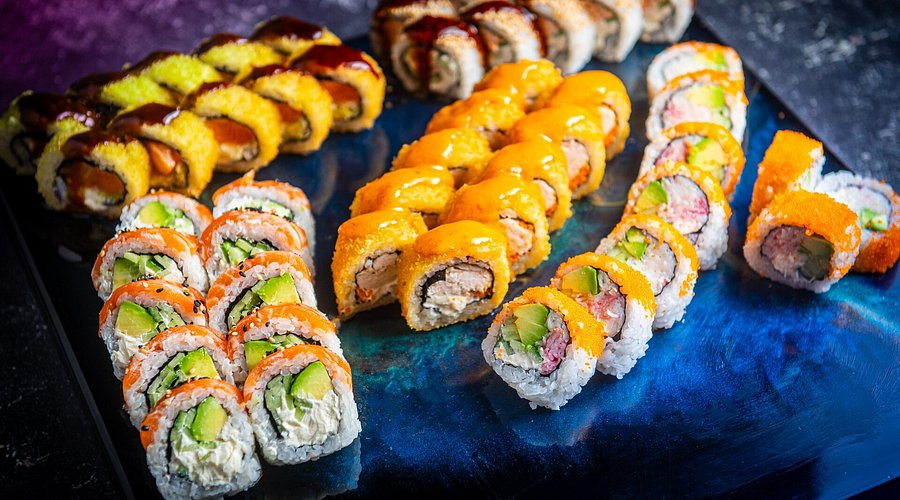

Catering  Sushi Sushi Diffrent selection of sushi Nigiri Maki Uramaki California Roll Inari
Teriyaki sauce Sauces Masterclass One day workshop An intense one-day course looking at how to create the most delicious sauces for use in range of Japanese cookery.